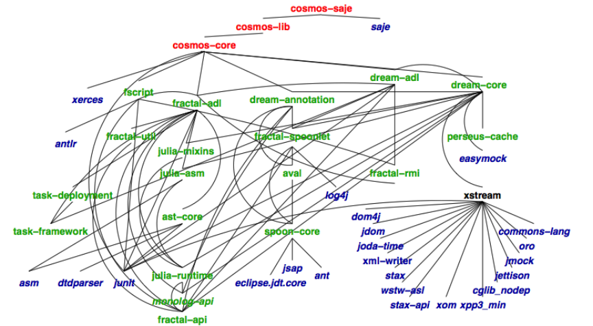
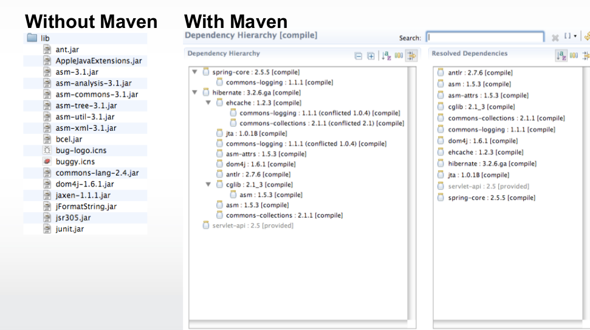
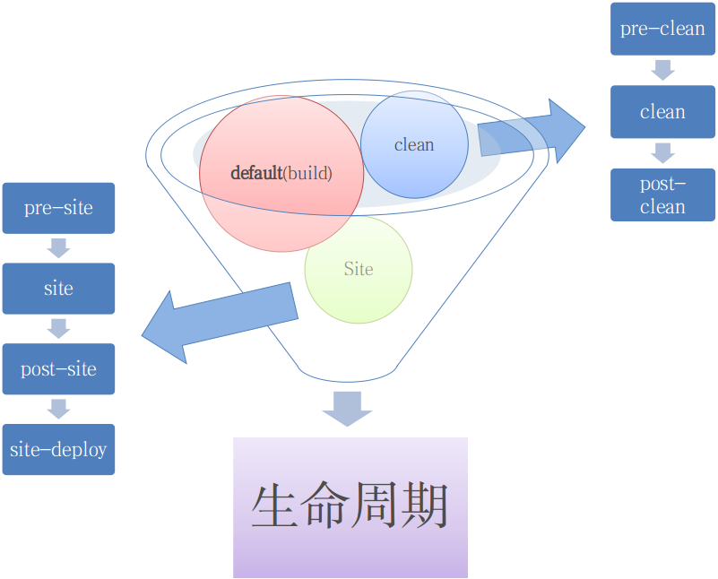
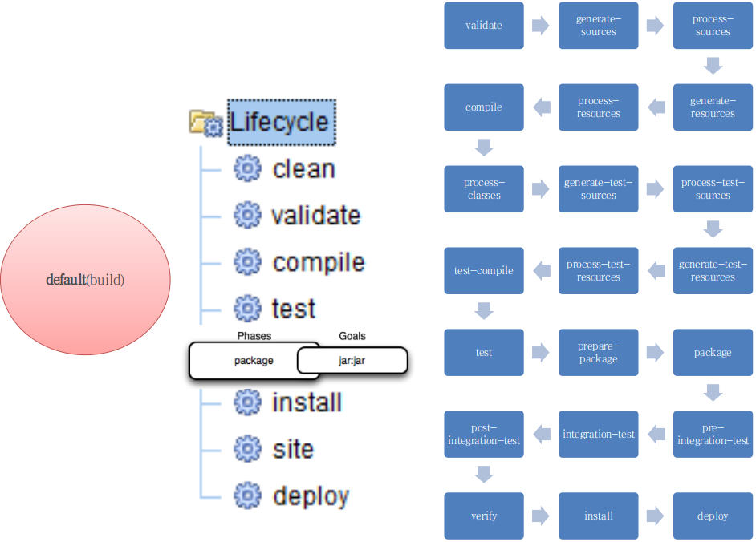
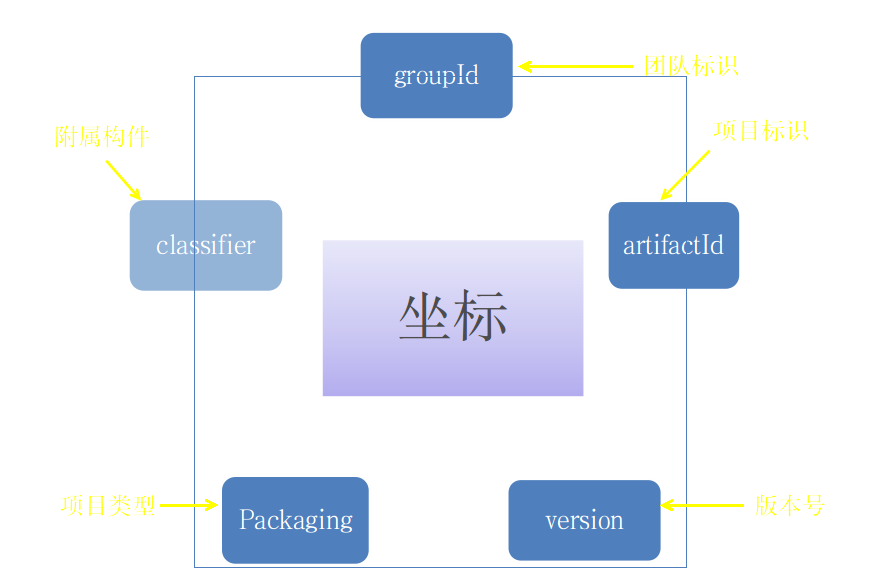
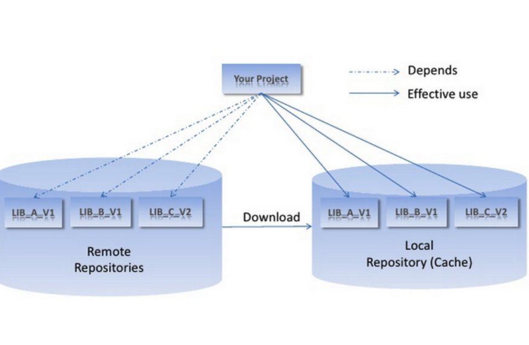
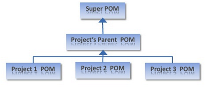
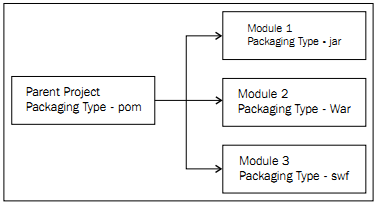
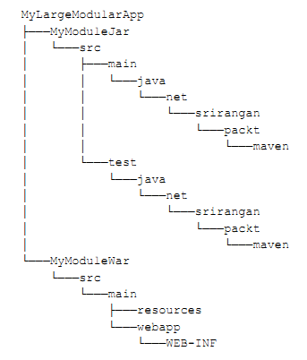

Maven简介
Maven功能?
项目构建工具
依赖管理工具
Maven未出现前如何构建?
IDE:
- Eclipse
- NetBeans
- IntelliJ
其它:
- Ant
- Make
开发步骤
Check Out代码
Coding
Unit Test
Debug
Bug Fix
生成测试报告
Deply
构建工具:IDE
- IDE不是万能的
- 依赖太多的手工界面操作:编译、测试、代码生成、打包等工具不能简单的一键完成
- 很难在项目中统一所有的IDE配置和编译配置
构建工具:Ant
build.xml:
<?xml version="1.0"?>
<project name="Hello" default="compile">
<target name="compile" description="compile the Java source code to class files">
<mkdir dir="classes"/>
<javac srcdir="." destdir="classes"/>
</target>
<target name="jar" depends="compile" description="create a Jar file ">
<jar destfile="hello.jar">
<fileset dir="classes" includes="**/*.class"/>
<manifest >
<attribute name="Main.Class" value="HelloProgram"/>
</manifest>
</jar>
</target>
</project>
Ivy依赖管理
ivy.xml
<ivy-module version="1.0" xmlns:m="http://ant.apache.org/ivy/maven">
...
<dependencies>
<dependency org="org.apache.hadoop" name="hadoop-annotations" rev="${hadoop-common.version}" conf="compile->default"/>
<dependency org="org.apache.hadoop" name="hadoop-common"
rev="${hadoop-common.version}" conf="compile->default">
<artifact name="hadoop-common" ext="jar" />
<artifact name="hadoop-common" type="tests" ext="jar" m:classifier="tests" />
</dependency>
...
</dependencies>
</ivy-module>
Jar依赖问题

Maven Jar依赖管理

<dependency>
<groupId>org.apache.hadoop</groupId> <!-- 组织ID -->
<artifactId>hadoop-core</artifactId> <!-- 项目ID -->
<version>0.20.2</version> <!-- 版本号 -->
</dependency>
Jar依赖传递
- Jar A 依赖 Jar B
- Jar B 依赖 Jar C
- 所以Jar A 依赖 Jar C
Maven概念
Maven生命周期

Maven默认生命周期

坐标

Maven 仓库

中心仓库
http://repo1.maven.org/maven2 http://search.maven.org私有仓库
http://192.168.9.9:8081/nexus/本地仓库
~/.m2/repositorypom继承层次



工程目录结构
| src/main/java | Application/Library sources |
| src/main/resources | Application/Library resources |
| src/main/filters | Resource filter files |
| src/main/assembly | Assembly descriptors |
| src/main/config | Configuration files |
| src/main/scripts | Application/Library scripts |
| src/main/webapp | Web application sources |
| src/test/java | Test sources |
| src/test/resources | Test resources |
| src/test/filters | Test resource filter files |
| src/site | Site |
| LICENSE.txt | Project's license |
| NOTICE.txt | Notices and attributions required by libraries that the project depends on |
| README.txt | Project's readme |
| pom.xml | POM file |
pom.xml
<project>
<modelVersion>4.0.0</modelVersion>
<!-- The Basics -->
<groupId>...</groupId>
<artifactId>...</artifactId>
<version>...</version>
<packaging>...</packaging>
<dependencies>...</dependencies>
<parent>...</parent>
<dependencyManagement>...</dependencyManagement>
<modules>...</modules>
<properties>...</properties>
<!-- Build Settings -->
<build>...</build>
<reporting>...</reporting>
<!-- More Project Information -->
<name>...</name>
<description>...</description>
<url>...</url>
<inceptionYear>...</inceptionYear>
<licenses>...</licenses>
<organization>...</organization>
<developers>...</developers>
<contributors>...</contributors>
<!-- Environment Settings -->
<issueManagement>...</issueManagement>
<ciManagement>...</ciManagement>
<mailingLists>...</mailingLists>
<scm>...</scm>
<prerequisites>...</prerequisites>
<repositories>...</repositories>
<pluginRepositories>...</pluginRepositories>
<distributionManagement>...</distributionManagement>
<profiles>...</profiles>
</project>
个性化配置
<profiles>
<profile>
<activation>
<property>
<name>environment</name>
<value>dev</value>
</property>
</activation>
<build>
...
</build>
</profile>
</profiles>
激活个性化配置
- 通过activation配置中的系统环境
- 通过参数,如下
mvn install -P profile-1,profile-2 #命令行中用参数 -P 指定，间隔符用逗号
mvn install -P !profile-1,!profile-2
依赖作用范围
Chaining promises
Promises by nature can be chained
promise function returns another promise which is resolved with a value returned by a callback function:
delayedAdd(2, 3)(function (result) {
// result === 5
return result*result;
})(function (result) {
console.log(result); // 25
});If no callback for given flow (success or error) was given, then promise is resolved with input value:
delayedAdd(2, 3)(null, function (err) {
// handle eventual error
})(function (result) {
console.log(result); // 5
});Instead of callbacks you can also pass promise values to promise:
promise3 = promise1(promise2);
// promise3 is resolved with the value of promise2 ...
// ... when both promise1 and promise2 are resolvedNesting promises
If a promise is resolved with another promise, it's not really resolved. Promise is resolved only when the final promise is resolved with a real value:
var def = deferred();
def.resolve(delayedAdd(2, 3));
def.promise(function (result) {
console.log(5); // 5;
});Error handling
Errors in promises are handled in a separate flow
A promise resolved with an error (rejected) propagates its error to all promises that depend on this promise (e.g. promises initiated by adding observers)
var error = new Error("Error");
promise(function () {
// success flow
throw error; // caught by promise implementation
})(function () {
// never called
})(function () {
// never called
}, function (e) {
console.log(e === error); // true
// handle error
});When there's no error callback passed, eventual error is silent
To expose the error, end promise chain with .end():
promise(function () {
throw new Error("Error"); // caught
})(function () {
// never called
}).end(); // Error is thrownIt's very important to end promise chains with end otherwise eventual errors that were not handled will not be exposed
Errors can also be handled via end call
end has same signature as then, with difference that it ends promise
chain (no new promise is returned)
promise(function () {
// ...
}).end(null, function(err) {
// handle error
});Working with Node.js callback style functions
It's not convienient to work with both promises and callback style functions
When you decide to build your flow with promises don't mix both concepts just promisify asynchronous functions so they return promises instead.
Do that with deferred.promisify:
var readFile = deferred.promisify(fs.readFile);
readFile(filename, 'utf-8')(function (content) {
// process content
}).end();deferred.promisify also takes care of input arguments. It makes sure that all arguments that are to be passed to asynchronous function are first resolved.
So we can write constructs like this:
var readFile = deferred.promisify(fs.readFile)
, writeFile = deferred.promisify(fs.writeFile);
writeFile(filename + '.copy',
readFile(filename, 'utf-8')).end();but keep in mind it's not best real world example, don't copy files that way, use fs.createReadStream instead
Grouping promises
Sometimes we're interested in results of more than one promise object
We can help us again with a deferred function:
deferred(delayedAdd(2, 3), delayedAdd(3, 5),delayedAdd(1, 7))(
function (result) {
console.log(result); // [5, 8, 8]
}
);Processing collections
There is promise aware Array's map:
deferred.map(filenames, readFile)(function (result) {
// result is an array of files content
});If any call of readFile ends with an error, then promise returned by deferred.map is immediately rejected with that error
There's also promise aware Array's reduce:
deferred.reduce([delayedAdd(2, 3), delayedAdd(3, 5), delayedAdd(1, 7)],
function (a, b) {
return delayedAdd(a, b);
})(function (result) {
console.log(result); // 21
});Promise extensions
In deferred promises are equipped with some useful extensions:
map & reduce
Promise aware Array's methods that would be executed on resolved value
readdir(directory).map(readFile)(function (result) {
// result is an array of directory files content
});invoke
Invokes function (with pregiven arguments) on resolved value.
promise = deferred({ foo: function (arg) { return arg*arg }});
promise.invoke('foo', 3)(function (result) {
console.log(result); // 9
});It works also with asynchronous functions:
promise = deferred({ foo: function (arg, callback) {
setTimeout(function () {
callback(null, arg*arg);
}, 100);
} });
promise.invoke('foo', 3)(function (result) {
console.log(result); // 9
});match
Matches resolved list into function arguments
var promise = deferred([2, 3]);
promise.match(function (a, b) {
console.log(a + b); // 5
});For more extensions see documentation at github.com/medikoo/deferred
You can also freely extend deferred with your own extensions
We've been introduced to promises. Let's look back at our Node.js example
With promises we can write it nearly same way as wrote it initially:
writeFile(dirname + '/lib.js',
// Read all filenames in given path
readdir(dirname)
// Filter *.js filenames
.invoke('filter', function (filename) {
return (filename.slice(-3) === '.js')
&& (filename !== 'lib.js');
})
// Read content of each file
.map(function (filename) {
return readFile(filename, 'utf-8');
})
// Concatenate into one string
.invoke('join', '\n')
).end(function (err) {
// handle eventual error
});What future standards have to offer ?
Currently there are no plans for promise implementation in Harmony
What's interesting we can find promises in Dart
However its API is not as versatile and largly differs form what was introduced here
- Instead of two possible resolution states there are three: completed, cancelled & failed
- You need to use three different methods to attach observers
- If promise is resolved with another promise, you need to run
flattento get final real value - Different approach to grouping promises (join and waitFor methods)
See Dart spec for more info on that: http://api.dartlang.org/dart_core/Promise.html
Let's see what real future has to offer...
Harmony
There are no promises but is there anything else that can help us with asynchronous programming ?
Coroutines
They would help with callback style, as instead of:
readFile(filename, function (err, content) {
// ..
});It would be possible to keep flow in current scope:
[err, content] = yield readFile(filename);
if (err) {
// handle error
return;
}
// process contentThis however won't work well with promises
(what about error path?)
Proxies
Proxies are very powerful
With proxies we can proxy property names onto resolved promise values
So instead of:
promise.invoke('foo', arg);We would be able to write:
promise.foo(arg);With internal support from promise implementation this would work
Let's improve our example with proxies.
It's basically same as our first "synchronous" version:
writeFile(dirname + '/lib.js',
// Read all filenames in given path
readdir(dirname)
// Filter *.js filenames
.filter(function (filename) {
return (filename.slice(-3) === '.js')
&& (filename !== 'lib.js');
})
// Read content of each file
.map(function (filename) {
return readFile(filename, 'utf-8');
})
// Concatenate into one string
.join('\n')
).end(function (err) {
// handle eventual error
});Questions ?
 @medikoo
@medikoo github.com/medikoo
github.com/medikooUse a spacebar or arrow keys to navigate